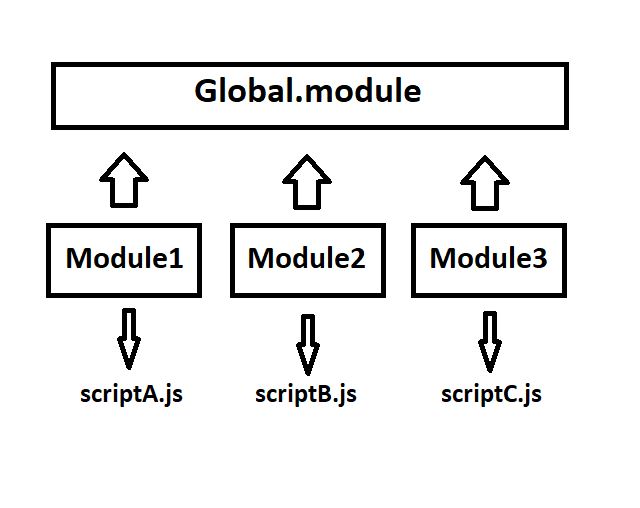
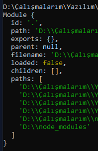

Script dosyalarındaki değişkenler global olarak tanımlanırsa aynı sayfa içerisinde kullanılan farklı script dosyalarından da erişilebilir durumda olacaktır. Bunun önüne geçmek için "IIFE" tanımlaması ile script dosyasına özel bir scope oluşturulabilir.
Dışarıya değerleri açabilmek için ise "return" anahtar ifadesini kullanmamız gerekecektir. Bu sayede dışarıdan erişilebilir olmasını istediğiniz değişkenleri veya fonksiyonlarıda tanımlayabilirsiniz.
NodeJS tarafında ise bu işlemi "module" kavramı ile gerçekleştirebilmekteyiz.
Global objesinin içerisinde bulunan module özelliğini console.log(module) şeklinde NodeJS üzerinde çalıştırdığınızda içeriğine hakim olabilirsiniz. Buradaki en önemli özellik export olacaktır.
IIFE içerisinde bulunan değerleri return ile nasıl public hale getiriyorsak module kavramında da exports içerisine ekleyeceğiz.